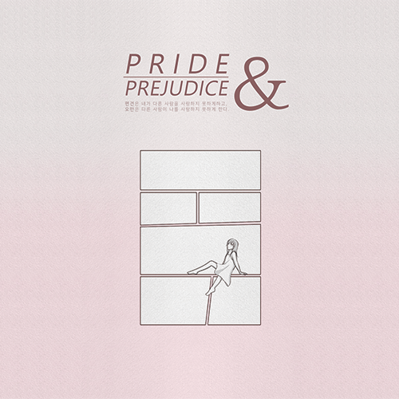
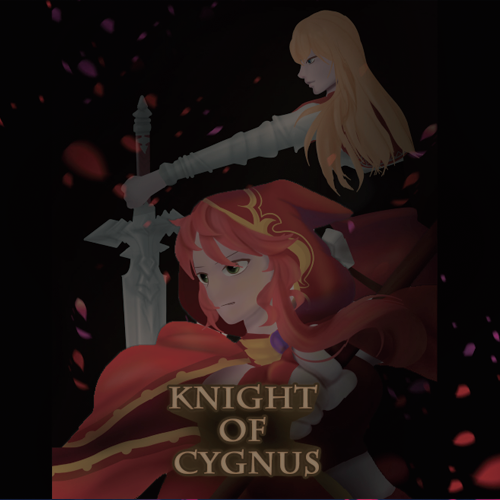

Web Design Studio PRIDE AND PREJUDICE
홈페이지 'PRIDE AND PREJUDICE' 는 오만과편견을 읽고
‘주인공인 엘리자베스가 주위 눈치를 안보고 능동적인 성격으로 이야기를 풀어나가면 어떨까?’
라는 궁금증에서 시작해 기억에 남았던 장면들, 우리가 명장면으로 꼽았던 장면들을 재해석 하여 모두가 재미를 느낄 수 있게 기획한 오마주 웹툰 페이지입니다.

Interactive Media COMPEFiTTION
위치기반 내가 사는 곳 주변 코스를 선택하고, 실시간 으로 측정되는 걸음수 데이터, 나를 따라 움직이는 귀 여운 아바타와 함께 운동을 시작해보자.
친구들은 물론 주변 지인들과 함께 지도에 떨어진 획기 적인 아이템을 사용해 경쟁 또는 협력하며 코스를 완주 해보는 것은 어떨까?
기존에 없던 실용어플과 게임어플 중간 성격의 UI/UX 를 위하여, 수많은 실패와 시도 끝에 탄생한 어플리케 이션 컴페핏션을 소개한다.

Moving Image Animation Knight of Cygnus
어렸을 때 다들 한 번쯤 해보던 게임 메이플스토리.
옛 추억을 회상하며 메이플 스토리 직업인 여제를 지키고 있는 시그너스 기사단 중 다양한 검술을 사용하는 소울마스터 '미하일' 여자 버전(창작)과 화염 마법의 전문가 플레임위자드 '오즈' 이 두개의 2D캐릭터를 3D캐릭터로 만들어 영상을 제작하였다.